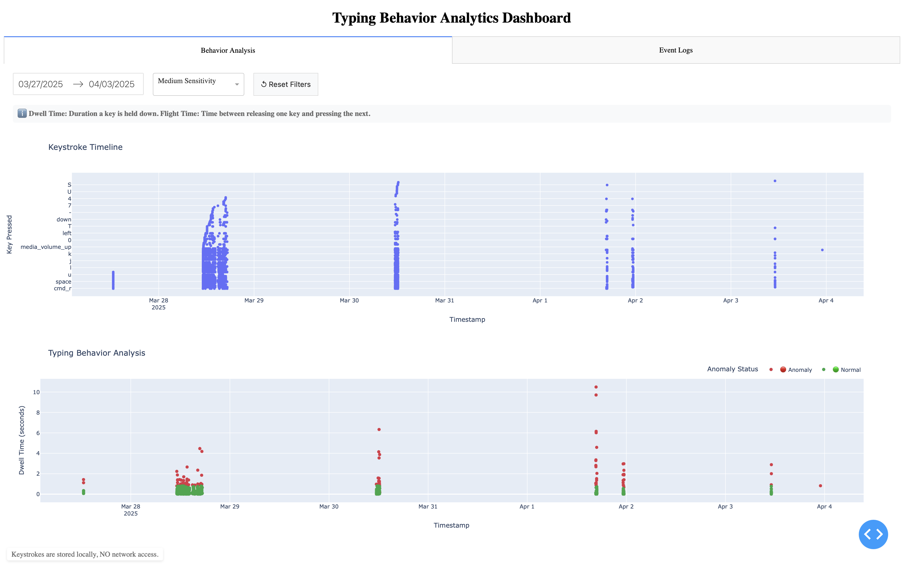

I'm Samarth Desai — a Cyber Security graduate with First Class Honours from the University of Hertfordshire. I focus on practical detection engineering: anomaly systems, analyst dashboards, and privacy-first architecture that holds up in production.
Primary escalation point for operational incidents across 8+ staff — coordinating real-time cross-functional response directly analogous to SOC Tier 1 triage. Led incident resolution under pressure, onboarded 5+ team members on compliance procedures, and maintained financial audit trails mirroring IT asset governance disciplines.
Customer-facing operations in a high-volume restaurant environment. Communication, adaptability, and team coordination under pressure.

Real-time analyst dashboard — keystroke timeline, anomaly scatter plot, configurable sensitivity thresholds.
Real-time keystroke anomaly detection using Isolation Forest trained on 5,000+ labelled samples. Reduced I/O latency ~40% via MinMaxScaler normalisation and a 10-minute rolling-window retraining pipeline. Consistently below 12s latency on consumer hardware (avg CPU 33.35%). Privacy-by-design throughout — local-only storage, anonymised timestamps, least-privilege file permissions — fully compliant with GDPR Articles 5, 25, and 32.
Production-structured Java application with RBAC across 5 class roles, enforcing least-privilege access aligned with ISO 27001. Automated audit trail generation mirrors SIEM logging requirements. Swing GUI with colour-coded statuses and dynamic reporting. 31 iterative commits with disciplined version-control workflow.
Dual-site enterprise network for London and Manchester using Cisco 2911 routers and Catalyst 2960 switches. IPv4/IPv6 dual-stack with 27 subnets and /64 prefixes per site. Evaluated MPLS, leased lines, and broadband against real business requirements. Ubuntu in VMware with role-segmented accounts, least-privilege Linux permissions, and documented security-first architecture decisions throughout.
I'm a cyber security graduate who cares about building things that hold up in the real world — not just demos. My final-year project, KeyWatch, puts UEBA logic and machine learning into a deployable detection system with genuine production metrics: 92% precision, 89% recall, GDPR-compliant by design from day one.
Beyond the technical side, I've spent 3+ years managing operational teams through real-time incidents — the same escalation discipline, composure under pressure, and structured triage that a SOC analyst relies on every shift.
I'm actively looking for graduate SOC analyst roles, junior cyber security analyst positions, and UK security graduate schemes — on-site, hybrid, or remote.
BSc (Hons) Computer Science — Cyber Security & Networks
University of Hertfordshire · 2022 – 2025 · First Class Honours
Specialised in threat detection, vulnerability management, malware analysis, secure network design, and security operations. Covered MITRE ATT&CK, SIEM/UEBA, ISO 27001/GDPR compliance, and hands-on security tool development.
Security
Engineering
Frameworks
Soft skills